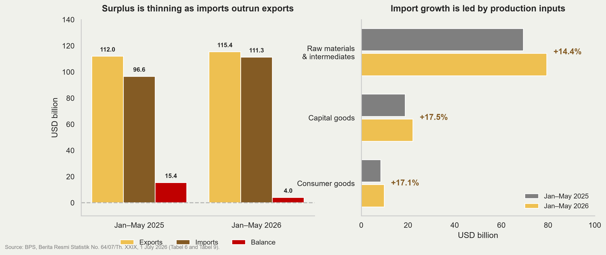
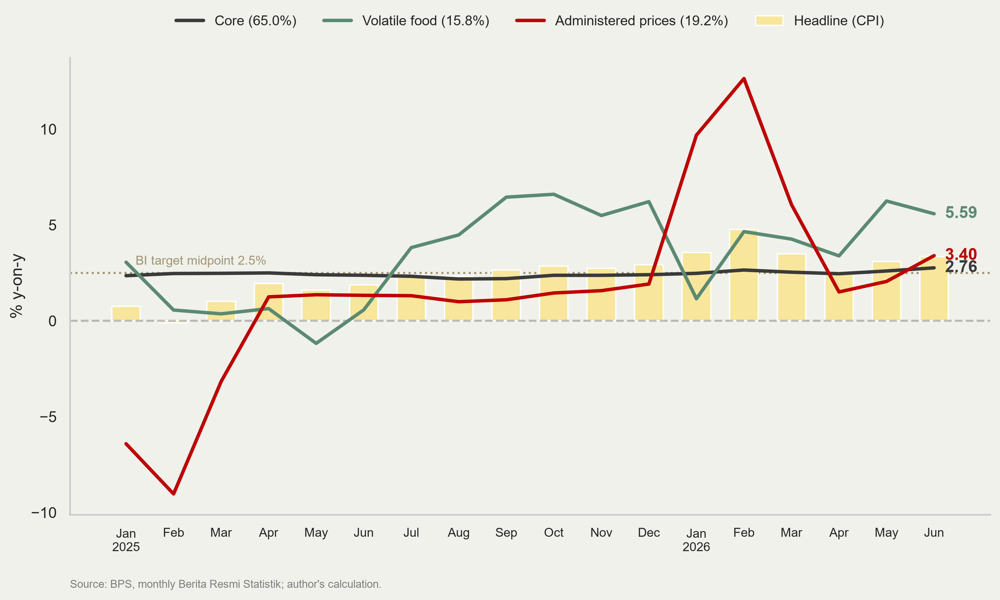
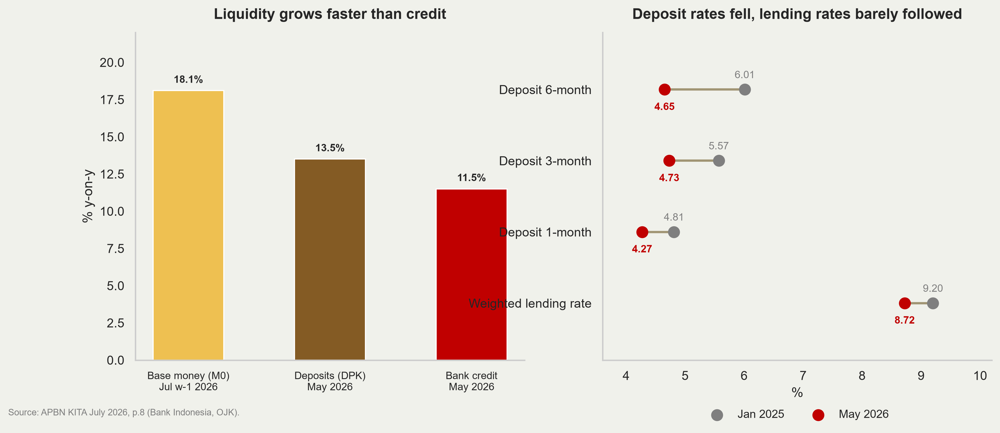
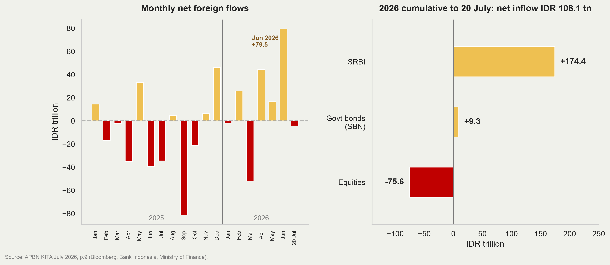
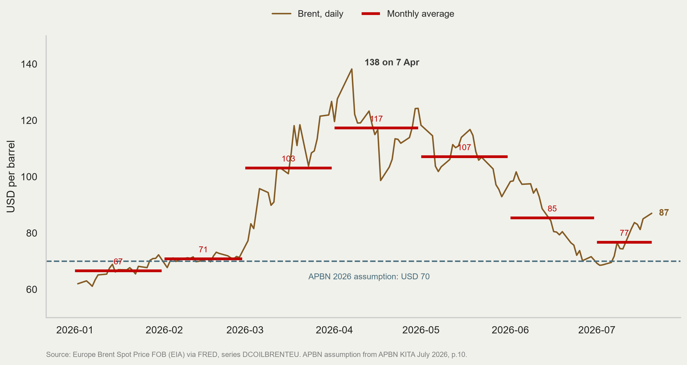
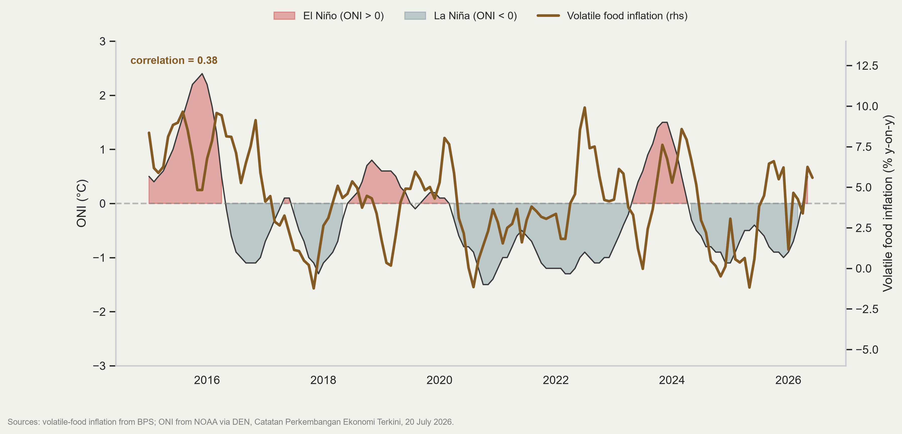
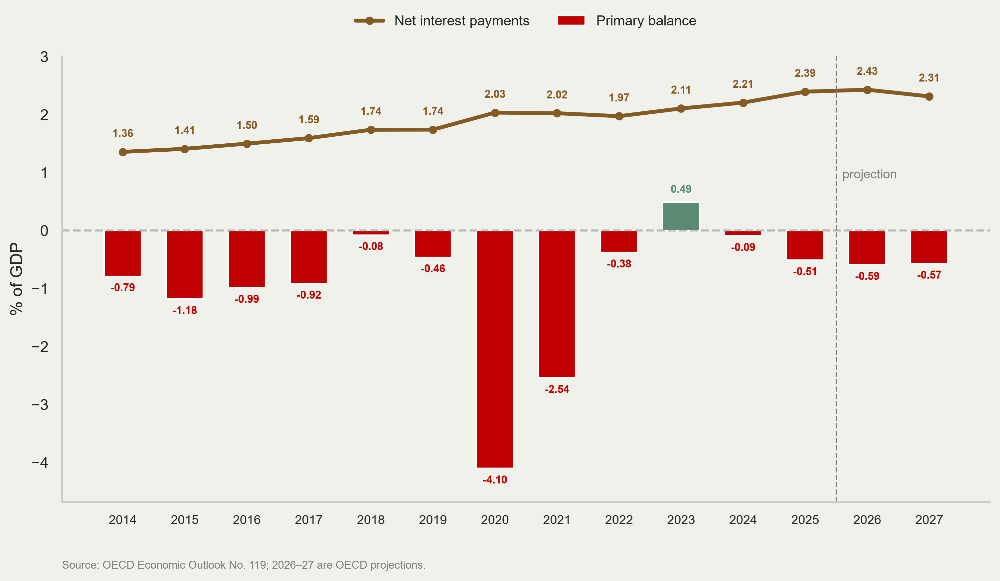
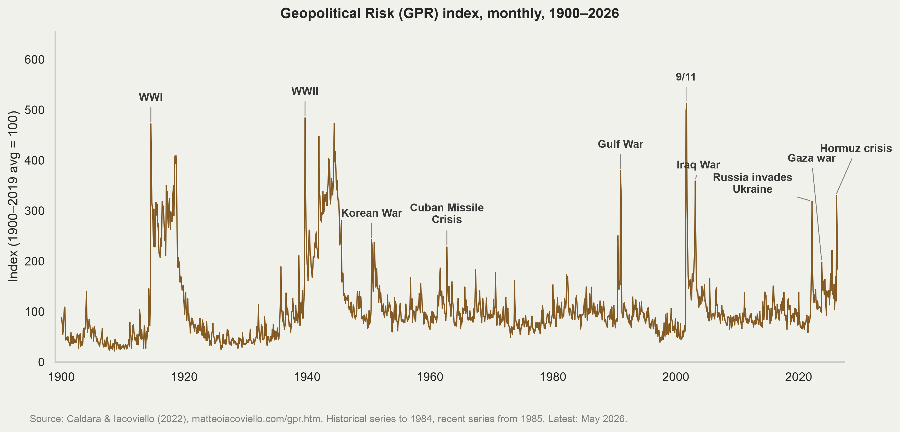
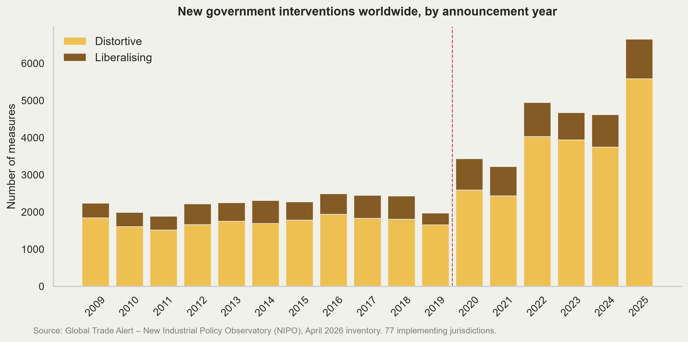
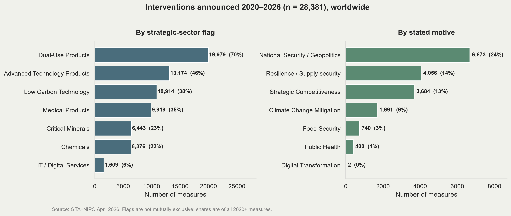

2026-07-28
Economist at the National Economic Council (Dewan Ekonomi Nasional).
Lecturer at Universitas Indonesia.
PhD in Economics, Australian National University.
Research: trade and industrial policy, applied econometrics.
Say hello at @imedkrisna or read krisna.or.id.
Part 1 — Indonesia update
Part 2 — Three themes
Q1-2026 GDP grew 5.61% y-on-y, well up from 4.87% in Q1-2025.
But the composition is unusual. Government consumption grew 21.81%, contributing 1.26 percentage points of the 5.61.
Household consumption, still 54.4% of GDP, grew 5.52% — helped by Ramadan and Idulfitri falling in the quarter.
Exports grew 0.90% while imports grew 7.18%: net exports subtracted from growth.
Quarter-on-quarter the economy contracted 0.77%, with government consumption down 30.13% after the Q4-2025 spending surge.
| (% y-on-y) | 2023 | 2024 | 2025 | 25Q1 | 25Q2 | 25Q3 | 25Q4 | 26Q1 |
|---|---|---|---|---|---|---|---|---|
| GDP | 5.05 | 5.03 | 5.11 | 4.87 | 5.12 | 5.04 | 5.39 | 5.61 |
| Household consumption (C) | 4.82 | 4.94 | 4.98 | 4.95 | 4.97 | 4.89 | 5.11 | 5.52 |
| Non-profit institutions | 9.83 | 12.48 | 5.13 | 3.07 | 7.82 | 3.76 | 5.90 | 6.28 |
| Government consumption (G) | 2.95 | 6.61 | 2.50 | −1.37 | −0.33 | 5.66 | 4.55 | 21.81 |
| Gross fixed capital formation (I) | 4.40 | 4.61 | 5.09 | 2.12 | 6.99 | 5.04 | 6.12 | 5.96 |
| Exports (X) | 1.32 | 6.51 | 7.03 | 6.46 | 10.95 | 9.14 | 3.25 | 0.90 |
| Imports (M) | −1.65 | 7.95 | 4.77 | 4.17 | 11.48 | 0.86 | 3.96 | 7.18 |
G contributed 1.26 pp in Q1-2026 against 2.94 pp from households, despite being one-eighth the size. Salaries (13th-month, THR) and the free nutritious meals programme (MBG) are the drivers.
the Q1 surge partly reflects the low base of Q1-2025, when government consumption contracted 1.22%.
Investment growth remains high at 5.96%. Growth enhancing?
The external sector turned. X at 0.90% against M at 7.18% is the mirror image of 2024–25 — and the monthly trade data confirm it, as the next slide shows.
| (% y-on-y) | 2023 | 2024 | 2025 | 25Q1 | 25Q2 | 25Q3 | 25Q4 | 26Q1 |
|---|---|---|---|---|---|---|---|---|
| GDP | 5.05 | 5.03 | 5.11 | 4.87 | 5.12 | 5.04 | 5.39 | 5.61 |
| Tradables | ||||||||
| Agriculture, forestry & fishing | 1.30 | 0.67 | 5.33 | 10.52 | 1.65 | 4.93 | 5.14 | 4.97 |
| Mining & quarrying | 6.12 | 4.90 | −0.66 | −1.23 | 2.03 | −1.98 | −1.31 | −2.14 |
| Manufacturing (C) | 4.64 | 4.43 | 5.30 | 4.55 | 5.68 | 5.54 | 5.40 | 5.04 |
| Non-tradables | ||||||||
| Electricity & gas | 4.91 | 4.77 | 3.10 | 5.11 | 0.90 | 2.86 | 3.55 | −0.99 |
| Water, waste & recycling | 4.90 | 1.56 | 0.94 | 0.18 | 0.82 | 3.32 | −0.51 | 0.42 |
| Construction | 4.91 | 7.02 | 3.81 | 2.18 | 4.98 | 4.21 | 3.89 | 5.49 |
| Wholesale & retail trade | 4.85 | 4.86 | 5.49 | 5.03 | 5.37 | 5.46 | 6.07 | 6.26 |
| Transport & storage | 13.96 | 8.69 | 8.78 | 9.01 | 8.52 | 8.62 | 8.98 | 8.04 |
| Accommodation, food & beverages | 10.01 | 8.56 | 7.41 | 5.75 | 8.04 | 8.50 | 7.15 | 13.14 |
| Information & communication | 7.59 | 7.57 | 8.35 | 7.72 | 7.92 | 9.65 | 8.09 | 7.14 |
| Financial & insurance | 4.77 | 4.74 | 3.96 | 3.98 | 3.20 | 0.77 | 7.92 | 4.68 |
| Real estate | 1.43 | 2.50 | 3.58 | 2.94 | 3.71 | 3.95 | 3.71 | 3.54 |
| Business services | 8.24 | 8.38 | 9.10 | 9.27 | 9.31 | 9.94 | 7.90 | 4.91 |
| Public administration | 1.50 | 6.40 | 3.86 | 4.79 | 4.69 | 4.33 | 1.63 | 6.45 |
| Education services | 1.78 | 3.75 | 4.99 | 5.04 | 1.40 | 10.59 | 3.43 | 5.18 |
| Human health & social work | 4.66 | 8.11 | 5.59 | 5.78 | 3.80 | 6.83 | 5.95 | 7.62 |
| Other services | 10.52 | 9.80 | 9.93 | 9.84 | 11.31 | 9.92 | 8.71 | 9.91 |
Manufacturing is the largest sector (19.07% of GDP) and grew 5.04%.
PMI manufacturing fell to 47.7 in June 2026, its fifth month below 50, and the employment sub-index to 46.9. GDP looks back; PMI looks forward.
Mining contracted 2.14% for a fourth quarter. The recent commodity price hike may change the number in Q2.
Electricity and gas contracted 0.99%, its first negative quarter since the pandemic.
The fastest growers — accommodation and food (13.1%), other services (9.9%), transport (8.0%) — are low-productivity, low-tradability activities.
| (% y-on-y, constant prices) | Share of GDP 2025 | 2023 | 2024 | 2025 |
|---|---|---|---|---|
| Manufacturing, total | 19.07 | 4.6 | 4.4 | 5.3 |
| Basic metals | 1.15 | 14.2 | 13.3 | 15.7 |
| Machinery & equipment | 0.28 | −0.0 | −0.4 | 14.0 |
| Other manufacturing; repair & installation | 0.12 | −2.1 | 3.5 | 9.2 |
| Chemicals, pharmaceuticals & botanicals | 1.83 | 0.1 | 5.9 | 8.4 |
| Coal products & oil-gas refining | 1.78 | 4.2 | 1.0 | 6.9 |
| Food & beverages | 7.13 | 4.5 | 5.9 | 6.4 |
| Non-metallic mineral products | 0.46 | 4.1 | −0.6 | 6.2 |
| Fabricated metal, computer, electronics, electrical | 1.60 | 13.7 | 6.2 | 4.6 |
| Textiles & apparel | 0.97 | −2.0 | 4.3 | 3.6 |
| Paper & printing | 0.64 | 4.5 | 2.6 | 3.4 |
| Leather & footwear | 0.24 | −0.3 | 6.8 | 3.3 |
| Furniture | 0.19 | −2.0 | 2.1 | 1.6 |
| Tobacco products | 0.68 | 4.8 | 3.5 | −1.4 |
| Transport equipment | 1.27 | 7.6 | −2.1 | −2.6 |
| Wood products | 0.36 | 1.2 | 2.8 | −3.3 |
| Rubber & plastics | 0.37 | −3.6 | 1.8 | −4.1 |
Aggregate manufacturing growth of 5.3% in 2025 is carried by basic metals (+15.7%) despite 1.15% of GDP.
Food and beverages (7.13% of GDP) at 6.4% is the other engine.
The labour-intensive, export-facing subsectors are flat or shrinking: textiles 3.6%, footwear 3.3%, furniture 1.6%, wood −3.3%, rubber and plastics −4.1%.
Transport equipment contracted for a second year (−2.6%).
growth is concentrated in a capital-intensive extractive-processing chain and in government-financed food demand, not in the tradable manufacturing base that employs people.

The surplus fell from USD 15.4 bn to USD 4.0 bn in a single year. Exports grew 3.02%; imports grew 15.24%.
May 2026 alone was a deficit of USD 1.6 bn — exports USD 23.20 bn against imports USD 24.81 bn, with exports down 5.73% y-on-y and imports up 22.16%. The cumulative figure still reads surplus; the monthly figure no longer does.
Raw materials and intermediates (+14.4%) and capital goods (+17.5%) are production inputs, consistent with the investment and manufacturing numbers.
Migas imports rose 27.89%, refined products alone 32.54% in values.
Exports of nickel and articles thereof rose USD 2.05 bn (+60.88%), while agriculture exports fell 24.95% and mining 8.14%.

The chart above shows headline CPI inflation (bars) with its three components as lines — core (65.0% of the basket), administered prices (19.2%) and volatile food (15.8%) — all in percent year-on-year, monthly, January 2025 to June 2026. Source: BPS.
Headline (3.34%) and core (2.76%) inflation in June 2026 are above the 2.5% target midpoint.
*Administered prices swung from −6.4% to +12.6% between January 2025 and February 2026: the January–February 2025 electricity discount created a base effect that mechanically flipped sign a year later, then fuel pass-through took over.
Volatile food at 5.58% has been above 5% for eight of the last twelve months.

Base money grows 18.1%, deposits 13.5%, credit 11.5%. Liquidity is being created faster than it is being intermediated.
Deposit rates fell across every tenor the 6-month rate by 136 bps but the weighted lending rate fell only 48 bps, from 9.20% to 8.72%.
A widening deposit–lending spread with decelerating credit is the signature of weak loan demand and cautious risk appetite.
Further monetary easing has limited traction. The constraint is on the demand side of credit, which is a real-sector and confidence problem.

After outflow pressure in Q1-2026 (March: −52.0 tn), Q2 reversed sharply: June alone brought +79.5 tn, and the year to 20 July stands at +108.1 tn net inflow.
The inflow is SRBI (+174.4 tn), Bank Indonesia’s own short-dated paper. Government bonds added only 9.3 tn, and equities lost 75.6 tn*
Two supports: MSCI retaining Indonesia’s EM status, and the S&P affirmation in July.
13 July 2026: S&P affirmed Indonesia at BBB/A-2, outlook stable.
S&P’s rationale: “robust growth prospects, generally prudent macroeconomic policy settings, and relatively light net external and government debt burden compared to peers.”
It gave weight to the government’s repeated commitment to the 3%-of-GDP deficit ceiling, and to its willingness to cut hard when needed — including trimming the MBG budget by roughly a third.
On Danantara: S&P does not consolidate SOE and Danantara debt with government debt, judging the likelihood of it crystallising on the sovereign balance sheet to be low.
Markets responded: the rupiah and the JCI both outperformed regional peers in the week after.
| Agency | Date | Rating | Outlook | Trigger |
|---|---|---|---|---|
| Moody’s | 5 Feb 2026 | Baa2 (affirmed) | Stable → Negative | Reduced predictability of policymaking; weakening governance |
| Fitch | 4 Mar 2026 | BBB (affirmed) | Stable → Negative | Policy uncertainty; increasingly centralised decision-making; debt service at 17% of revenue |
| S&P | 13 Jul 2026 | BBB/A-2 (affirmed) | Stable | Fiscal and external strains judged temporary |

Brent opened the year at USD 61 and peaked at USD 138 on 7 April as the Strait of Hormuz escalation ran its course. The monthly average went 67, 71, 103, 117, 107 — a doubling in three months.
It has averaged USD 90 year to date, 29% above the APBN assumption. The Jan–May average of USD 92.81 is consistent with the ICP outturn of USD 91.87 that APBN Kita reports.
The de-escalation held only briefly. June averaged 85, July fell as low as 70 — and then turned: Brent is back at USD 87, up 24% from the June trough.
This single line drives three things already in this deck: the subsidy and compensation bill at 52.1% of budget in six months, administered-price inflation at 3.42%, and the migas import bill up 27.89%.
For a trading house the point is not the level but the variance. A chokepoint that can move Brent 60% in a quarter is a working-capital and freight-rate problem before it is a macro problem.
Core inflation is not the problem. At 2.76% it is inside the target band and gives Bank Indonesia room.
Volatile food is 15.8% of the basket but contributed 0.91 pp of June’s 3.34% — more than a quarter of headline inflation from a sixth of the basket.
It is also the component that bites hardest on purchasing power: food is a much larger share of the consumption basket for low-income households than for the average.
The evidence of that bite is already visible: retail sales contracted 4.0% y-on-y in Q2-2026, and the food, beverages and tobacco category contracted 4.1%.
And unlike core inflation, volatile food is driven by a variable no interest rate can touch: the weather.

The correlation over the full sample is 0.35 — modest on the contemporaneous reading, but the visual relationship is clear at the peaks: 2015–16, 2023–24, and now.
The transmission runs through rainfall to harvests to rice, chilli and shallot prices, with a lag of roughly two to three quarters.
The 2023–24 El Niño coincided with volatile food inflation peaking near 10%.
We are now entering a larger one.
NOAA and BMKG project the current El Niño to be the strongest in roughly 150 years, peaking at the end of 2026 and continuing into early 2027.
Ramadan and Idulfitri 2027 fall a month earlier than in 2026, which means peak seasonal food demand lands on top of the El Niño peak.
Q4-2026 therefore faces a simultaneous supply shock and demand surge, into an economy where retail sales are already contracting.
The policy problem is one of lags, not of forecasting.
Rice procurement, import licensing and distribution each take months. A decision taken when prices have already moved arrives after the harvest window has closed.
Government rice reserves and other food reserves must be built before the peak, not during it.
Distribution, not just stock, is the binding constraint. Price dispersion across provinces during the 2024 episode was larger than the national average increase.
Social assistance should be pre-positioned for Q4-2026 to protect purchasing power, given that consumption is already softening.
Import flexibility is the cheapest insurance available, and the most politically expensive to use late.
The asymmetry is stark: importing rice that turns out not to be needed costs a storage and disposal loss. Not importing rice that turns out to be needed costs a food-price spike, a real-income shock, and a monetary policy dilemma.
Waiting for confirmation that domestic supply has failed guarantees arriving late, because the shipping and clearance lag is itself two to three months.
The 2023–24 episode is the natural experiment: the decision to import came after the price had moved, and the import then arrived into a recovering market — the worst of both.
| (IDR trillion) | 2025 budget | 2025 S-I | 2026 budget | 2026 S-I | % of budget | Growth (%) |
|---|---|---|---|---|---|---|
| A. Revenue | 3,005.1 | 1,201.8 | 3,153.6 | 1,459.4 | 46.3 | 21.4 |
| I. Tax revenue | 2,490.9 | 978.3 | 2,693.7 | 1,187.8 | 44.1 | 21.4 |
| 1. Taxes | 2,189.3 | 831.3 | 2,357.7 | 1,035.7 | 43.9 | 24.6 |
| 2. Customs & excise | 301.6 | 147.0 | 336.0 | 152.0 | 45.2 | 3.4 |
| II. Non-tax revenue | 513.6 | 222.9 | 459.2 | 271.0 | 59.0 | 21.6 |
| B. Expenditure | 3,621.3 | 1,406.0 | 3,842.7 | 1,656.0 | 43.1 | 17.8 |
| I. Central government | 2,701.4 | 1,003.6 | 3,149.7 | 1,298.6 | 41.2 | 29.4 |
| 1. Line ministries (K/L) | 1,160.1 | 470.5 | 1,510.5 | 658.9 | 43.6 | 40.0 |
| 2. Non-K/L | 1,541.4 | 533.0 | 1,639.2 | 639.7 | 39.0 | 20.0 |
| II. Transfers to regions | 919.9 | 402.5 | 693.0 | 357.4 | 51.6 | −11.2 |
| C. Primary balance | −63.3 | 52.8 | −89.7 | 85.1 | — | 61.0 |
| D. Overall balance | −616.2 | −204.2 | −689.1 | −196.5 | 28.5 | −3.8 |
| % of GDP | −2.53 | −0.84 | −2.68 | −0.76 | ||
| E. Financing | 616.2 | 283.6 | 689.1 | 452.0 | 65.6 | 59.4 |
The headline is reassuring: deficit 0.76% of GDP, primary balance in surplus at Rp85.1 tn, revenue up 21.4%.
Revenue growth is narrow. Of the Rp1,035.7 tn of tax receipts, VAT and luxury-goods tax alone contributed Rp380.0 tn, growing 42.2%.
Subsidy and compensation realised at Rp233.0 tn, already 52.1% of the full-year budget in six months.
ICP averaged USD 91.87/barrel against the APBN’s USD 70, the rupiah Rp17,197/USD against Rp16,500, and inflation 3.34% against 2.5%.
Transfers to regions were cut 11.2% — the deficit was protected by squeezing subnational government, which is where capital spending happens.
Financing was front-loaded: 65.6% of the annual plan in six months, with net debt financing at 57.4% of budget and SBN issuance at 62.7%.

Net interest payments have risen every year but two since 2014, from 1.36% of GDP to a projected 2.43% in 2026 — a 79% increase in the interest burden relative to the economy.
The primary balance, meanwhile, has been close to zero since 2022. Indonesia is not running large primary deficits.
That is the whole story: the deficit is increasingly the interest bill, not the programme spending. In 2026 the projected overall deficit of about 3.0% of GDP is roughly 0.6 pp primary deficit plus 2.4 pp interest.
The debt stock (~40% GDP) is not the issue. The flow is: interest is a first claim on revenue before a rupiah of programme spending.
A rising interest bill with a flat primary balance means the debt ratio climbs even with disciplined programme spending.
The arithmetic is unforgiving when the effective interest rate exceeds nominal growth. The rupiah averaged Rp17,197/USD against the Rp16,500 assumed, which raises the cost of the foreign-currency share.
Moody’s and Fitch: interest-to-revenue above 15%, which Fitch already reads at 17%.
The binding constraint on Indonesia’s fiscal ambition is the interest bill, and the only durable answer is revenue.

Geopolitical Risk index (Caldara & Iacoviello 2022)

Number of industrial policy measures per year, distortive versus liberalising, from the New Industrial Policy Observatory

Interventions concentrate on dual-use (70%), advanced technology (46%), low-carbon (39%), medical (35%) and critical minerals (23%) products.
Stated motives: national security (24%) and supply-chain resilience (14%) — geopolitics, not classical market failure.
Gopinath, Gourinchas, Presbitero & Topalova (Journal of International Economics, 2025), gravity estimation on granular bilateral data:
Since the Ukraine war, trade between the US-centric and China-centric blocs is about 11% lower, and FDI about 12% lower, than flows within the same bloc.
Historical benchmark: during the Cold War, inter-bloc trade fell by two-thirds relative to intra-bloc. There is a great deal of room left to deteriorate.
The key difference from the Cold War: non-aligned “connector” countries show no decline — they bridge the two blocs and gain share.
Indonesia trades heavily with both blocs. Connector status is an asset — and it is measurable.
Growth is 5.61%, but its composition is fragile: government consumption, a nickel-processing chain, and food demand financed by the budget. PMI at 47.7 says the forward-looking picture is weaker than the backward-looking one.
Inflation pressure is not from demand. It is administered prices and volatile food — and the largest El Niño in 150 years peaks in Q4-2026, into an early Ramadan. Act on supply and imports now, not in December.
The fiscal constraint is the interest bill. Two of three rating agencies have moved to negative outlook on exactly this point.
Geoeconomics is no longer background. Import concentration is rising, blocs are re-forming, and Indonesia’s connector position is an asset that is quietly eroding.
BPS. 2024–2026. Pertumbuhan Ekonomi Indonesia, quarterly BRS: No. 16/02/Th. XXVII; 17/02/Th. XXVIII; 74/08/Th. XXVIII; 102/11/Th. XXVIII; 18/02/Th. XXIX; 48/05/Th. XXIX.
BPS. 2026. Perkembangan Ekspor dan Impor Indonesia Mei 2026. BRS No. 64/07/Th. XXIX, 1 July.
BPS. 2026. Perkembangan Indeks Harga Konsumen Juni 2026. BRS No. 61/07/Th. XXIX, 1 July.
BPS. 2026. Pendapatan Nasional Indonesia 2021–2025. Jakarta, 22 June.
BPS. 2026. Static table 908, Inflasi Umum, Inti, Harga Diatur Pemerintah, dan Bergejolak Nasional.
Caldara, D. & M. Iacoviello. 2022. Measuring geopolitical risk. American Economic Review 112(4).
CSIS Indonesia. 2026. Strategic Diversification as Indonesia’s Foreign Economic Policy. Jakarta.
Dewan Ekonomi Nasional. 2026. Catatan Perkembangan Ekonomi Terkini, 20 July.
EIA. 2026. Europe Brent Spot Price FOB, daily, series DCOILBRENTEU via FRED, Federal Reserve Bank of St. Louis.
Global Trade Alert. 2026. New Industrial Policy Observatory (NIPO), April.
Gopinath, G., P.-O. Gourinchas, A. F. Presbitero & P. Topalova. 2025. Changing global linkages: A new Cold War? Journal of International Economics 153.
Gupta, K. et al. 2026. Prabowonomics: Can Indonesia really grow at 8%? Bulletin of Indonesian Economic Studies, Survey of Recent Developments, April.
Kementerian Keuangan. 2026. APBN KITA — Kinerja dan Fakta, July edition.
Moody’s Ratings, 5 February 2026; Fitch Ratings, 4 March 2026; S&P Global Ratings, 13 July 2026 — Indonesia sovereign rating actions.
OECD. 2026. Economic Outlook No. 119. Paris.